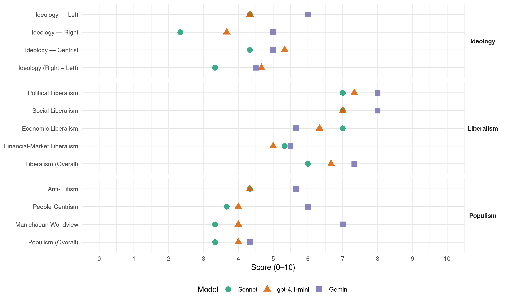

FDF (Belgium, 1987)
manifesto_id 21912_198712
Get full text: This site shows derived annotations and short verbatim quotes only. The full manifesto text is © Manifesto Project / WZB — obtain it via manifesto-project.wzb.eu using the manifesto_id above.
Headline scores
| Dimension | Sonnet | gpt-4.1-mini | Gemini |
|---|---|---|---|
| Populism (Overall) | 3.3 | 4.0 | 4.3 |
| Anti-Elitism | 4.3 | 4.3 | 5.7 |
| People-Centrism | 3.7 | 4.0 | 6.0 |
| Manichaean Worldview | 3.3 | 4.0 | 7.0 |
| Ideology (Right − Left) | 3.3 | 4.7 | 4.5 |
| Liberalism (Overall) | 6.0 | 6.7 | 7.3 |
| Political Liberalism | 7.0 | 7.3 | 8.0 |
| Social Liberalism | 7.0 | 7.0 | 8.0 |
| Economic Liberalism | 7.0 | 6.3 | 5.7 |
| Financial-Market Liberalism | 5.3 | 5.0 | 5.5 |
Evidence per dimension
Economic Liberalism
Gemini · score 6.0 · verified · chunk 1
“promotion de l’emploi indépendant et dans les P.M.E.”
important facteur de promotion de l’emploi indépendant et dans les P.M.E. 3. UNE POLITIQUE
Gemini · score 4.0 · verified · chunk 2
“l’intéressement du secteur privé au logement”
sociétés de logement social. - l’intéressement du secteur privé au logement des “locataires sociaux”. - une attention
Gemini · score 7.0 · verified · chunk 3
“l’achèvement du Marché Unique”
A cet égard, l’objectif de l’achèvement du Marché Unique fixé pour l’année 1992 requérera une
gpt-4.1-mini · score 6.0 · verified · chunk 1
“le F.D.F réclame une politique industrielle novatrice et la création de nouveaux emplois”
Le F.D.F, insiste pour qu’à Bruxelles, des moyens suffisants soient mis au service d’une politique industrielle novatrice et permettent la création de nouveaux emplois.
gpt-4.1-mini · score 6.0 · verified · chunk 2
“développement économique et industriel dynamique”
…Un enseignement menant à la connaissance du milieu et de ses possibilités, une rechercher scientifique efficace, des échanges plus importants avec les écorégions voisines, un développement économique et industriel dynamique en sont les corollaires…
gpt-4.1-mini · score 7.0 · verified · chunk 3
“réaliser l’unité de ce grand marché de 320 millions de consommateurs”
Il suffit, pour s’en convaincre, de rappeler comment la commission européenne définit sa tâche : “réaliser l’unité de ce grand marché de 320 millions de consommateurs suppose que les Etats membres de la Communauté s’accordent sur l’abolition des barrières de toute nature, renforcent leur coopération monétaire et industrielle notamment”.
Sonnet · score 5.0 · mixed · chunk 1
“simplification des formalités à la fois fiscales et administratives”
une simplification des formalités a la fois fiscales et administratives constitue avec certitude un important facteur de promotion de l’emploi indépendant
Sonnet · score 5.0 · mixed · chunk 2
“renforcer la collaboration université-industrie”
il faut dénoncer l’étranglement de la recherche universitaire. renforcer la collaboration université-industrie. mettre sur pied un statut du chercheur
Sonnet · score 7.0 · verified · chunk 3
“politique dynamique d’exportation de produits et de services”
par une politique dynamique d’exportation de produits et de services fournis par les entreprises bruxelloises.
Financial-Market Liberalism
Gemini · score 4.0 · verified · chunk 1
“une contribution sérieuse des banques”
les provinces apparaîtraient ainsi rapidement comme désuètes car dépourvues de sens dès lors que la régionalisation est mise en place. La disparition des provinces et la reprise de leurs quelques rares compétences par les régions (transfert de personnel) induiraient une économie estimée à plus de 5 milliards. - Une contribution sérieuse des banques. Le F.D.F, considère comme
Gemini · score 7.0 · verified · chunk 3
“renforcer leur coopération monétaire”
barrières de toute nature, renforcent leur coopération monétaire et industrielle notamment”. La réalisation de ce programme
gpt-4.1-mini · score 4.0 · verified · chunk 1
“les fuites de capitaux vers l’étranger (125 milliards en 1985, source B.B.L.)”
Par contre les effets d’une Celle politique se reflètent par une poursuite des fuites de capitaux vers l’étranger (125 milliards en 1985, source B.B.L.). Savons-nous aussi qu’à l’instar des mutuelles, nos gros partis traditionnels participent à cette fuite en organisant eux-mêmes des placements de capitaux à l’étranger.
gpt-4.1-mini · score 6.0 · verified · chunk 3
“place financière et commerciale ouverte sur le monde”
Siège des Communautés européennes et de nombreuses organisations internationales, place financière et commerciale ouverte sur le monde, lieu d’échanges économiques et culturels, ville accueillant des milliers d’étrangers, siège d’universités renommées et d’écoles supérieures de qualité, Bruxelles doit continuer a s’ouvrir sur le monde.
Sonnet · score 4.0 · verified · chunk 1
“contribution sérieuse des banques”
Une contribution sérieuse des banques. Le F.D.F, considère comme insuffisant l’effort actuel des grands groupes financiers.
Sonnet · score 5.0 · verified · chunk 2
“régime d’épargne-pension ne peut, en aucune façon, menacer”
Le F.D.F, souligne que le régime d’épargne-pension ne peut, en aucune façon, menacer à terme les droits existants à l’égard des régimes de pension légale
Sonnet · score 7.0 · verified · chunk 3
“place financière et commerciale ouverte sur le monde”
Siège des Communautés européennes et de nombreuses organisations internationales, place financière et commerciale ouverte sur le monde, lieu d’échanges économiques et culturels
Political Liberalism
Gemini · score 8.0 · verified · chunk 1
“une assemblée parlementaire régionale directement élue”
gérée, sur le plan législatif, par une assemblée parlementaire régionale directement élue, et, sur le plan
Gemini · score 8.0 · verified · chunk 2
“respect des règles de la démocratie”
loi sur l’urbanisme fondée sur le respect des règles de la démocratie représentative en ce qu’elle donne
Gemini · score 8.0 · verified · chunk 3
“La presse est libre, la censure ne”
AIDE À LA PRESSE. “La presse est libre, la censure ne pourra jamais être rétablie”, (art. 1)
gpt-4.1-mini · score 7.0 · verified · chunk 1
“le F.D.F propose la mise sur pied d’une Commission parlementaire d’audit de nos administrations publiques”
Le F.D.F, propose la mise sur pied d’une Commission parlementaire d’audit de nos administrations publiques et de leurs pratiques.
gpt-4.1-mini · score 7.0 · verified · chunk 2
“RESPECT des règles de la DEMOCRATIE représentative”
…REAGIR AVEC LE F.D.F., C’EST VOULOIR : UNE NOUVELLE LOI SUR L’URBANISME fondée sur le RESPECT des règles de la DEMOCRATIE représentative en ce qu’elle donne son plein sens à 1’AUTONOMIE COMMUNALE, garante de cette démocratie, à la PARTICIPATION DES HABITANTS…
gpt-4.1-mini · score 8.0 · verified · chunk 3
“La presse est libre, la censure ne pourra jamais être rétablie”
La presse est libre, la censure ne pourra jamais être rétablie“, (art. 1) de la Constitution) . Mais ici comme ailleurs, la liberté s’arrête là où commence celle de l’autre, c’est-à-dire les libertés et droits individuels protégés notamment par le secret professionnel ou le secret de l’instruction judiciaire.
Sonnet · score 6.0 · verified · chunk 1
“Respect du suffrage universel pour la détermination”
Respect du suffrage universel pour la détermination de la composition des assemblées législatives à l’exception de la deuxième Chambre fédérale
Sonnet · score 7.0 · verified · chunk 2
“RESPECT des règles de la DEMOCRATIE représentative”
UNE NOUVELLE LOI SUR L’URBANISME fondée sur le RESPECT des règles de la DEMOCRATIE représentative en ce qu’elle donne son plein sens à l’AUTONOMIE COMMUNALE, garante de cette démocratie
Sonnet · score 8.0 · verified · chunk 3
“La presse est libre, la censure ne pourra jamais être rétablie”
“La presse est libre, la censure ne pourra jamais être rétablie”, (art. 1) de la Constitution). Mais ici comme ailleurs, la liberté s’arrête là où commence celle de l’autre
Liberalism (Overall)
Gemini · score 7.0 · verified · chunk 1
“une assemblée parlementaire régionale directement élue”
gérée, sur le plan législatif, par une assemblée parlementaire régionale directement élue, et, sur le plan
Gemini · score 7.0 · verified · chunk 2
“respect des règles de la démocratie”
loi sur l’urbanisme fondée sur le respect des règles de la démocratie représentative en ce qu’elle donne
Gemini · score 8.0 · verified · chunk 3
“La presse est libre, la censure ne”
AIDE À LA PRESSE. “La presse est libre, la censure ne pourra jamais être rétablie”, (art. 1)
gpt-4.1-mini · score 6.0 · verified · chunk 1
“le F.D.F propose la mise sur pied d’une Commission parlementaire d’audit de nos administrations publiques”
Le F.D.F, propose la mise sur pied d’une Commission parlementaire d’audit de nos administrations publiques et de leurs pratiques.
gpt-4.1-mini · score 7.0 · verified · chunk 2
“RESPECT des règles de la DEMOCRATIE représentative”
…REAGIR AVEC LE F.D.F., C’EST VOULOIR : UNE NOUVELLE LOI SUR L’URBANISME fondée sur le RESPECT des règles de la DEMOCRATIE représentative en ce qu’elle donne son plein sens à 1’AUTONOMIE COMMUNALE, garante de cette démocratie, à la PARTICIPATION DES HABITANTS…
gpt-4.1-mini · score 7.0 · verified · chunk 3
“La presse est libre, la censure ne pourra jamais être rétablie”
La presse est libre, la censure ne pourra jamais être rétablie“, (art. 1) de la Constitution) . Mais ici comme ailleurs, la liberté s’arrête là où commence celle de l’autre, c’est-à-dire les libertés et droits individuels protégés notamment par le secret professionnel ou le secret de l’instruction judiciaire.
Sonnet · score 5.0 · verified · chunk 1
“Diminution des taux d’imposition et suppression des discriminations”
A) Diminution des taux d’imposition et suppression des discriminations les plus flagrantes. Le décumul des revenus et la diminution progressive
Sonnet · score 6.0 · verified · chunk 2
“RESPECT des règles de la DEMOCRATIE représentative”
UNE NOUVELLE LOI SUR L’URBANISME fondée sur le RESPECT des règles de la DEMOCRATIE représentative en ce qu’elle donne son plein sens à l’AUTONOMIE COMMUNALE
Sonnet · score 7.0 · verified · chunk 3
“l’achèvement du Marché Unique fixé pour l’année 1992”
l’objectif de l’achèvement du Marché Unique fixé pour l’année 1992 requérera une volonté politique exemplaire.
Anti-Elitism
Gemini · score 7.0 · verified · chunk 1
“l’irresponsabilité de nos ex-dirigeants”
nos enfants paieront demain l’irresponsabilité de nos ex-dirigeants. Pour une philosophie alternative
Gemini · score 4.0 · verified · chunk 2
“pratiques de passe-droit, d’influences secrètes”
familiarisa même les décideurs économiques et les hommes politiques aux pratiques de passe-droit, d’influences secrètes ou de chantage à l’emploi
Gemini · score 6.0 · verified · chunk 3
“la particratie a atteint un niveau insupportable”
position est claire ; nous croyons que la particratie a atteint un niveau insupportable tant au plan central qu’à celui de
gpt-4.1-mini · score 7.0 · verified · chunk 1
“les libéraux bruxellois sont au gouvernement, les flamands réalisent des avancées à Bruxelles”
Chaque fois que les libéraux bruxellois sont au gouvernement, les flamands réalisent des avancées à Bruxelles. Ce fut déjà le cas lors de l’application des lois linguistiques en 66 ainsi qu’à la révision constitutionnelle de fin 1970 et surtout lors de l’adoption des lois de réformes institutionnelles d’août 80.
gpt-4.1-mini · score 2.0 · verified · chunk 2
“les promoteurs qui conseillent aux bruxellois”d’aller habiter en périphérie, au vert”“
…Les promoteurs qui conseillent aux bruxellois “d’aller habiter en périphérie, au vert” afin de leur laisser les mains libres à Bruxelles s’en réjouissent autant que les Flamands…
gpt-4.1-mini · score 4.0 · verified · chunk 3
“Affaires Kirschen, Bauloye, des mutuelles, des pots de vin”
Affaires Kirschen, Bauloye, des mutuelles, des pots de vin à la Défense nationale, à la gendarmerie, et demain… Autant d’inquiétudes voire de scandales qui affectent grandement notre système démocratique.
Sonnet · score 5.0 · verified · chunk 1
“les partis traditionnels ont bâclé la réforme institutionnelle”
Le constat : les partis traditionnels ont bâclé la réforme institutionnelle de 1980. Ceux-là même qui dénoncent aujourd’hui les insuffisances
Sonnet · score 4.0 · verified · chunk 2
“pratiques de la spéculation immobilière à grande échelle”
Les années 60 ont été marquées par le laisser-faire urbanistique. Les pratiques de la spéculation immobilière à grande échelle étaient courantes. L’absence ou la complaisance des pouvoirs publics
Sonnet · score 4.0 · verified · chunk 3
“la particratie a atteint un niveau insupportable”
Notre position est claire ; nous croyons que la particratie a atteint un niveau insupportable tant au plan central qu’à celui de nouveaux pouvoirs.
Ideology — Centrist
Gemini · score 5.0 · verified · chunk 3
“la particratie a atteint un niveau insupportable”
position est claire ; nous croyons que la particratie a atteint un niveau insupportable tant au plan central qu’à celui de
gpt-4.1-mini · score 6.0 · verified · chunk 1
“le F.D.F exige l’application stricte du prescrit constitutionnel”
POUR OBTENIR LA CREATION IMMEDIATE DE LA REGION BRUXELLOISE, LE F.D.F. EXIGE L’APPLICATION STRICTE DU PRESCRIT CONSTITUTIONNEL. L’ARTICLE 107QUATER EXISTE ; IL DOIT ÊTRE APPLIQUE IMMEDIATEMENT.
gpt-4.1-mini · score 4.0 · verified · chunk 2
“RESPECT des règles de la DEMOCRATIE représentative”
…REAGIR AVEC LE F.D.F., C’EST VOULOIR : UNE NOUVELLE LOI SUR L’URBANISME fondée sur le RESPECT des règles de la DEMOCRATIE représentative en ce qu’elle donne son plein sens à 1’AUTONOMIE COMMUNALE, garante de cette démocratie, à la PARTICIPATION DES HABITANTS…
gpt-4.1-mini · score 6.0 · verified · chunk 3
“Rassemblement fédéraliste, démocratique et pluraliste”
En matière de politique étrangère, le F.D.F, attache une grande importance à la construction européenne. Rassemblement fédéraliste, démocratique et pluraliste, les options régionales et communautaires du F.D.F, trouvent dans la dimension européenne un prolongement naturel.
Sonnet · score 5.0 · verified · chunk 1
“gestion des intérêts de Bruxelles par les Bruxellois”
UNE NECESSITE : LA VRAIE REGION DE BRUXELLES ET LA GESTION DES INTERETS DE BRUXELLES PAR LES BRUXELLOIS.
Sonnet · score 4.0 · verified · chunk 2
“Rassemblement fédéraliste, démocratique et pluraliste”
En matière de politique étrangère, le F.D.F, attache une grande importance à la construction européenne. Rassemblement fédéraliste, démocratique et pluraliste, les options régionales
Sonnet · score 4.0 · verified · chunk 3
“moralisation urgente de notre vie politique”
le F.D-F. réclame cependant une moralisation urgente de notre vie politique via notamment la transparence dans le financement des partis.
Ideology — Left
Gemini · score 6.0 · verified · chunk 1
“une nouvelle distribution des deniers publics”
toutes les mesures que le F.D.F, préconise entraînent une nouvelle distribution des deniers publics et déterminent une réorganisation
gpt-4.1-mini · score 5.0 · verified · chunk 1
“le F.D.F réclame une politique industrielle novatrice et la création de nouveaux emplois”
Le F.D.F, insiste pour qu’à Bruxelles, des moyens suffisants soient mis au service d’une politique industrielle novatrice et permettent la création de nouveaux emplois.
gpt-4.1-mini · score 3.0 · verified · chunk 2
“la lutte contre la misère qui touche 500.000 personnes en Belgique”
…Le F.D.F, se prononce pour une lutte sans merci contre la misère qui touche 500.000 personnes en Belgique, par le biais de politiques de l’emploi, du logement, de la santé et de l’éducation…
gpt-4.1-mini · score 5.0 · verified · chunk 3
“Inscription dans la Constitution de droits économiques et sociaux fondamentaux”
Inscription dans la Constitution de droits économiques et sociaux fondamentaux, tels le droit au logement et le droit à la dignité humaine par la garantie de revenus minimums.
Sonnet · score 5.0 · verified · chunk 1
“conjuger liberté et solidarité, autonomie et responsabilité”
Il importe de conjuger liberté et solidarité, autonomie et responsabilité. Pour être efficace, un plan d’assainissement doit être négocié
Sonnet · score 5.0 · verified · chunk 2
“droits économiques et sociaux font partie intégrante des droits de l’homme”
Le F.D.F, rappelle que les droits économiques et sociaux font partie intégrante des droits de l’homme. Face à la dénatalité qui menace la viabilité de la sécurité sociale
Sonnet · score 3.0 · verified · chunk 3
“droits économiques et sociaux fondamentaux”
Inscription dans la Constitution de droits économiques et sociaux fondamentaux, tels le droit au logement et le droit à la dignité humaine par la garantie de revenus minimums.
Ideology (Right − Left)
Gemini · score 6.0 · verified · chunk 1
“une nouvelle distribution des deniers publics”
toutes les mesures que le F.D.F, préconise entraînent une nouvelle distribution des deniers publics et déterminent une réorganisation
Gemini · score 3.0 · verified · chunk 3
“la particratie a atteint un niveau insupportable”
position est claire ; nous croyons que la particratie a atteint un niveau insupportable tant au plan central qu’à celui de
gpt-4.1-mini · score 6.0 · verified · chunk 1
“le F.D.F réclame une politique industrielle novatrice et la création de nouveaux emplois”
Le F.D.F, insiste pour qu’à Bruxelles, des moyens suffisants soient mis au service d’une politique industrielle novatrice et permettent la création de nouveaux emplois.
gpt-4.1-mini · score 3.0 · verified · chunk 2
“contre Bruxelles et l’emploi des Bruxellois”
…Ils veulent rendre cette dépendance irréversible. Rien d’étonnant a ce qu’un projet flamand (de l’Institut St Aloysius) supprime hardiment UD large pan industriel du plan de secteur de la Région bruxelloise… contre Bruxelles et l’emploi des Bruxellois…
gpt-4.1-mini · score 5.0 · verified · chunk 3
“Rassemblement fédéraliste, démocratique et pluraliste”
En matière de politique étrangère, le F.D.F, attache une grande importance à la construction européenne. Rassemblement fédéraliste, démocratique et pluraliste, les options régionales et communautaires du F.D.F, trouvent dans la dimension européenne un prolongement naturel.
Sonnet · score 4.0 · verified · chunk 1
“parti fédéraliste, est plus que tout autre sensible”
Le F.D.F., parti fédéraliste, est plus que tout autre sensible a ce défi et à cet enjeu
Sonnet · score 3.0 · verified · chunk 2
“droits économiques et sociaux font partie intégrante”
Le F.D.F, rappelle que les droits économiques et sociaux font partie intégrante des droits de l’homme
Sonnet · score 3.0 · verified · chunk 3
“la particratie a atteint un niveau insupportable”
Notre position est claire ; nous croyons que la particratie a atteint un niveau insupportable tant au plan central qu’à celui de nouveaux pouvoirs.
Ideology — Right
Gemini · score 5.0 · verified · chunk 1
“une présence massive d’étrangers”
des politiques gouvernementales laxistes qui ont conduit à une présence massive d’étrangers, plus de 200.000
gpt-4.1-mini · score 7.0 · verified · chunk 1
“la loi du 21/07/87 refuse à Bruxelles la reconnaissance de Région”
Ainsi la loi du 21/07/87 se situe-t-elle exactement dans la ligne de la proposition de loi Vic Anciaux : refuser à Bruxelles la reconnaissance de Région, faire de la capitale une structure étroitement subordonnée au pouvoir central et a laquelle on impose la parité linguistique.
gpt-4.1-mini · score 2.0 · verified · chunk 2
“le contrôle, local et frontalier, des immigres clandestins”
…Mettre fin à 1’immigration clandestine par un meilleur contrôle, local et frontalier, des immigres clandestins qui doivent être refoulés…
gpt-4.1-mini · score 2.0 · verified · chunk 3
“le libre choix de la langue par le citoyen soit reconnu et respecté”
Le renforcement de la protection de la vie privée par un contrôle démocratique des systèmes de fichiers informatiques établis tant par les pouvoirs publics que par les personnes de droit privé.
Sonnet · score 3.0 · verified · chunk 1
“présence massive d’étrangers, plus de 200.000 à Bruxelles”
Des politiques gouvernementales laxistes qui ont conduit à une présence massive d’étrangers, plus de 200.000 à Bruxelles
Sonnet · score 3.0 · verified · chunk 2
“maîtrise de l’immigration dans le respect des droits”
Il préconise sans ambiguïté une politique de maîtrise de l’immigration dans le respect des droits de toutes les populations établies à Bruxelles
Sonnet · score 1.0 · verified · chunk 3
“maintien de la Belgique au sein de l’O.T.A.N.”
se prononce en faveur du maintien de la Belgique au sein de l’O.T.A.N. mais considère que l’Europe doit y jouer un rôle spécifique accru.
Manichaean Worldview
Gemini · score 7.0 · verified · chunk 1
“une nouvelle agression contre Bruxelles”
législature écoulée, le prétendu “statu quo” institutionnel de Bruxelles est tombé. On a porté une nouvelle agression contre Bruxelles en faisant adopter
gpt-4.1-mini · score 6.0 · verified · chunk 1
“une agression contre Bruxelles en faisant adopter une loi sur le statut de l’Agglomération bruxelloise”
On a porté une nouvelle agression contre Bruxelles en faisant adopter une loi sur le statut de l’Agglomération bruxelloise qui fait une concession fondamentale aux revendications flamandes.
gpt-4.1-mini · score 3.0 · verified · chunk 2
“contre Bruxelles et l’emploi des Bruxellois”
…Ils veulent rendre cette dépendance irréversible. Rien d’étonnant a ce qu’un projet flamand (de l’Institut St Aloysius) supprime hardiment UD large pan industriel du plan de secteur de la Région bruxelloise. S’attaquer à ce qui reste du secondaire ou aux potentialités existantes, c’est aggraver la situation économique bruxelloise. Car personne n’ignore qu’un emploi dans le tertiaire n’a pas comblé les pertes dans le secondaire… contre Bruxelles et l’emploi des Bruxellois…
gpt-4.1-mini · score 3.0 · verified · chunk 3
“sacrifié les plus démunis sur l’autel de l’austérité”
Une fois de plus, le gouvernement a sacrifié les plus démunis sur l’autel de l’austérité, au mépris de tous ses engagements.
Sonnet · score 4.0 · verified · chunk 1
“Jean Gol est piégé par Jean-Luc Dehaene”
Lorsque les libéraux prétendent s’occuper de Bruxelles, Jean Gol est piégé par Jean-Luc Dehaene et les Bruxellois sont privés de leur argent !
Sonnet · score 3.0 · verified · chunk 2
“la jobardise néo-libérale n’a conduit qu’à l’immobilisme”
Camouflant l’absence d’une réelle politique en matière d’immigration, la jobardise néo-libérale n’a conduit qu’à l’immobilisme et à la perte de crédit de la Belgique au plan international
Sonnet · score 3.0 · verified · chunk 3
“sacrifié les plus démunis sur l’autel de l’austérité”
Une fois de plus, le gouvernement a sacrifié les plus démunis sur l’autel de l’austérité, au mépris de tous ses engagements.
People-Centrism
Gemini · score 6.0 · verified · chunk 1
“l’impôt des Bruxellois serve aux Bruxellois”
fiscalité. Il faut que l’impôt des Bruxellois serve aux Bruxellois. 1. Dans un but de
gpt-4.1-mini · score 6.0 · verified · chunk 1
“le F.D.F affirme que la Région bruxelloise doit être gérée par un gouvernement régional”
Le F.D.F. affirme que la Région bruxelloise doit être gérée, sur le plan législatif, par une assemblée parlementaire régionale directement élue, et, sur le plan exécutif, par un gouvernement régional qui soit l’émanation directe de la majorité parlementaire et responsable devant elle.
gpt-4.1-mini · score 3.0 · verified · chunk 2
“la participation des habitants”
…RESPECT des règles de la DEMOCRATIE représentative en ce qu’elle donne son plein sens à 1’AUTONOMIE COMMUNALE, garante de cette démocratie, à la PARTICIPATION DES HABITANTS…
gpt-4.1-mini · score 3.0 · verified · chunk 3
“la démocratie passe par la décentralisation du pouvoir et le rapprochement de celui-ci vers les citoyens”
La démocratie passe par la décentralisation du pouvoir et le rapprochement de celui-ci vers les citoyens. La participation de l’électeur à la gestion politique constitue pour le F.D.F, une volonté de démocratisation et de transparence.
Sonnet · score 5.0 · verified · chunk 1
“IL FAUT QUE L’IMPOT DES BRUXELLOIS SERVE AUX BRUXELLOIS”
IL NE S’AGIT PAS D’AGGRAVER LA FISCALITE. IL FAUT QUE L’IMPOT DES BRUXELLOIS SERVE AUX BRUXELLOIS.
Sonnet · score 3.0 · verified · chunk 2
“au bénéfice de l’ensemble de la population”
le F.D.F, propose d’ETENDRE et d’INTENSIFIER le transport public et non plus de le raboter et de l’asphyxier, ceci au bénéfice de l’ensemble de la population, motorisée ou non motorisée
Sonnet · score 3.0 · verified · chunk 3
“la fidélité à l’intérêt de tous”
place, en premier lieu, la compétence, l’imagination et la rigueur, ainsi que la fidélité à l’intérêt de tous, autrement dit le contraire des pratiques sécrétées par la particratie.
Populism (Overall)
Gemini · score 7.0 · verified · chunk 1
“l’irresponsabilité de nos ex-dirigeants”
nos enfants paieront demain l’irresponsabilité de nos ex-dirigeants. Pour une philosophie alternative
Gemini · score 3.0 · verified · chunk 2
“pratiques de passe-droit, d’influences secrètes”
familiarisa même les décideurs économiques et les hommes politiques aux pratiques de passe-droit, d’influences secrètes ou de chantage à l’emploi
Gemini · score 3.0 · verified · chunk 3
“la particratie a atteint un niveau insupportable”
position est claire ; nous croyons que la particratie a atteint un niveau insupportable tant au plan central qu’à celui de
gpt-4.1-mini · score 6.0 · verified · chunk 1
“les libéraux bruxellois sont au gouvernement, les flamands réalisent des avancées à Bruxelles”
Chaque fois que les libéraux bruxellois sont au gouvernement, les flamands réalisent des avancées à Bruxelles. Ce fut déjà le cas lors de l’application des lois linguistiques en 66 ainsi qu’à la révision constitutionnelle de fin 1970 et surtout lors de l’adoption des lois de réformes institutionnelles d’août 80.
gpt-4.1-mini · score 3.0 · verified · chunk 2
“contre Bruxelles et l’emploi des Bruxellois”
…Ils veulent rendre cette dépendance irréversible. Rien d’étonnant a ce qu’un projet flamand (de l’Institut St Aloysius) supprime hardiment UD large pan industriel du plan de secteur de la Région bruxelloise… contre Bruxelles et l’emploi des Bruxellois…
gpt-4.1-mini · score 3.0 · verified · chunk 3
“Affaires Kirschen, Bauloye, des mutuelles, des pots de vin”
Affaires Kirschen, Bauloye, des mutuelles, des pots de vin à la Défense nationale, à la gendarmerie, et demain… Autant d’inquiétudes voire de scandales qui affectent grandement notre système démocratique.
Sonnet · score 4.0 · verified · chunk 1
“les Bruxellois sont privés de leur argent”
Jean Gol est piégé par Jean-Luc Dehaene et les Bruxellois sont privés de leur argent !
Sonnet · score 3.0 · verified · chunk 2
“pratiques de passe-droit, d’influences secrètes”
Le contournement de cette rigidité familiarisa même les décideurs économiques et les hommes politiques aux pratiques de passe-droit, d’influences secrètes ou de chantage à l’emploi
Sonnet · score 3.0 · verified · chunk 3
“la particratie a atteint un niveau insupportable”
Notre position est claire ; nous croyons que la particratie a atteint un niveau insupportable tant au plan central qu’à celui de nouveaux pouvoirs.
Social Liberalism